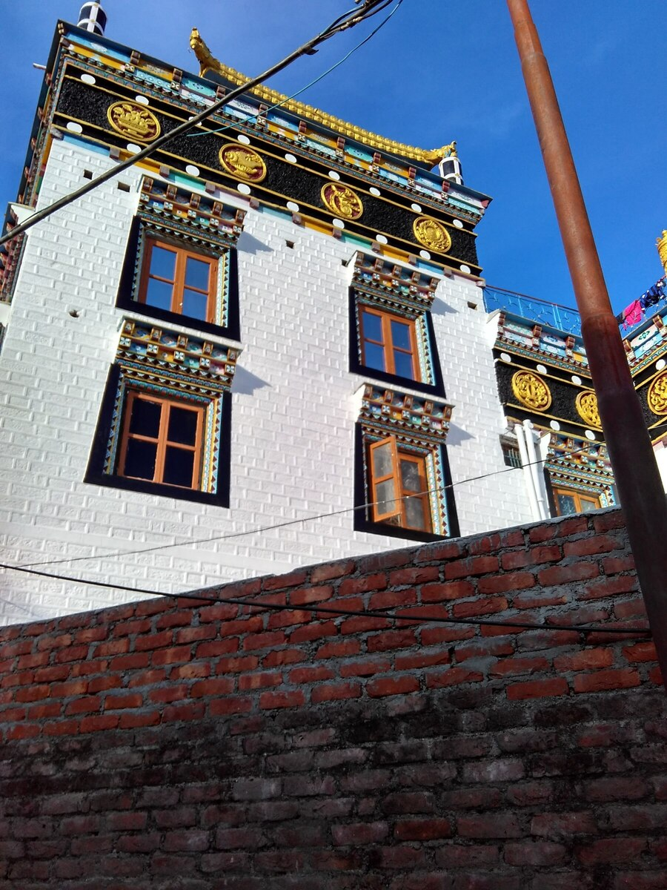
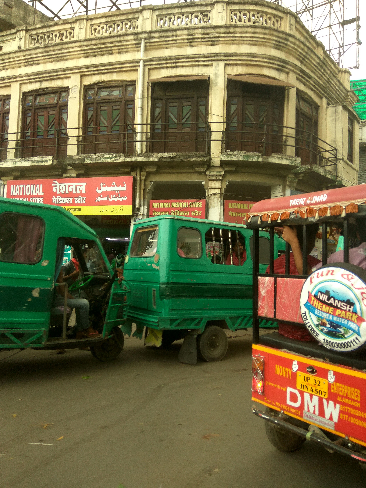
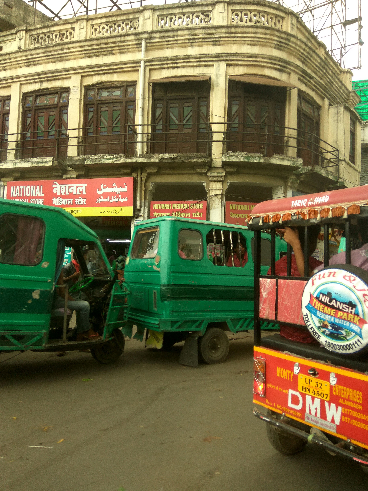

Preprints
- Local boundedness of variational solutions of double phase nonlocal parabolic equations, with Harsh Prasad, preprint, 2021
- Existence of variational solutions to nonlocal evolution equations via convex minimization, with Harsh Prasad, preprint, arxiv:2112.00402 [math.AP]
- On Lipschitz regularity of bounded minimizers of functionals of (p,q) growth, with Karthik Adimurthi, preprint, arxiv:2108.06153 [math.AP]
- Optimal C1,α regularity for quasilinear parabolic equations with non-standard growth, with Karthik Adimurthi and Suchandan Ghosh, Submitted, 2021
- An optimal boundedness result for weak solutions of double phase quasilinear parabolic equations, with Karthik Adimurthi, preprint, arxiv:2011.04373 [math.AP]
Publications
- Combined effects of homogenization and singular perturbations : A Bloch wave approach, published in Networks and Heterogeneous Media, vol. 16, no. 3, pp. 427-458, September 2021. preprint at arXiv:2011.11137 [math.AP]
- Bloch wave approach to almost periodic homogenization and approximations of effective coefficients, with Sivaji Ganesh Sista, published in Discrete and Continuous Dynamical Systems Series B, 2021. preprint at arXiv:1908.07977 [math.AP]
- Bloch wave homogenisation of quasiperiodic media, with Sivaji Ganesh Sista, published in the European Journal of Applied Mathematics, 2020. preprint at arXiv:1910.12724 [math.AP]
- Generic Simplicity of Spectral Edges and Applications to Homogenization, with Sivaji Ganesh Sista, Asymptotic Analysis, vol. 116, no. 3-4, pp. 219-248, 2020, preprint at arXiv:1807.00917 [math.AP]
- A refinement of Cauchy's bound for the moduli of zeros of a polynomial, with V.K. Jain, Bull. Math. Soc. Sci. Math. Roumanie (N.S.) 61(109) (2018), no. 2, 173--185
{{ "Documents" | downcase }}

 
